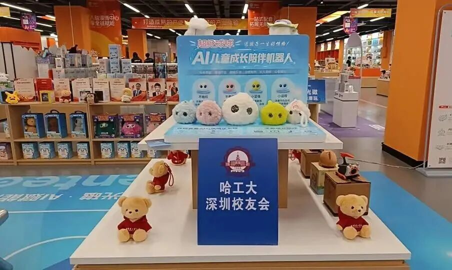
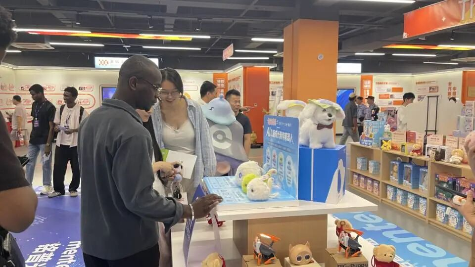
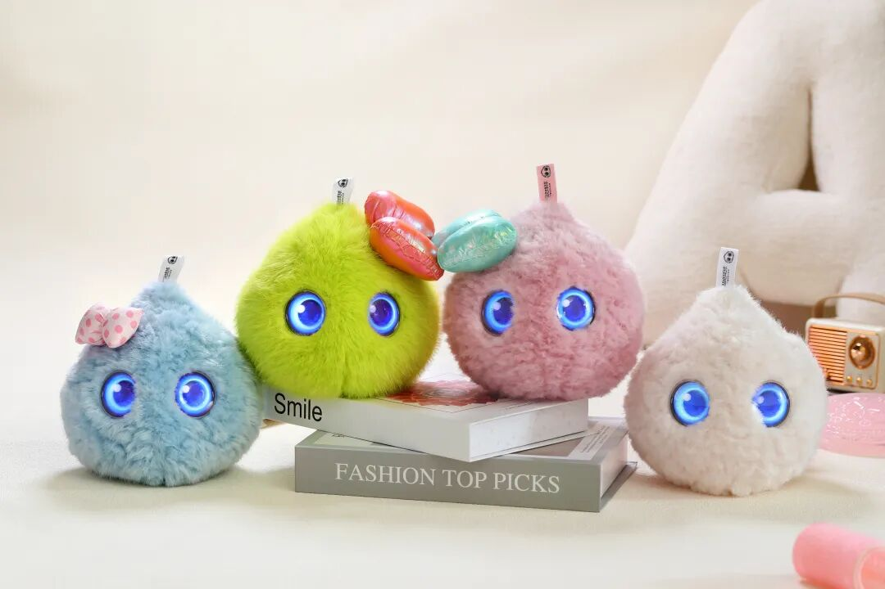

为期5天的第十六届中国国际动漫博览会，已在东莞石排漫博中心正式启幕。
本次展会汇集动漫IP、潮流玩具、智能文创、数字科技等多个领域，汇聚2200+全球优质IP、500家海内外企业机构参展，预计迎来十万级观展客流。来自全国各地的渠道商、投资人、文创从业者以及广大普通观众齐聚现场，推动动漫文化、潮玩经济与前沿数字科技深度交融，碰撞出更多产业新火花。
展会现场，超级有爱智能携自研王牌产品超级球球AI陪伴机器人，亮相哈工大深圳校友会「AI+机器人+潮玩生态展区」。产品把潮玩的外观美学和AI智能技术相互结合，跳出传统早教机的固有形态，以科技潮玩的全新定位，一经亮相便收获众多目光，成为本次展会上备受关注的参展产品。

展会高光时刻｜实力收获全网瞩目
【海外客商密集洽谈，跨境合作热度高涨】

展会开幕之后，展区内始终保持较高人气。不少海外客商慕名驻足，近距离上手体验超级球球的完整功能。在现场交流过程中，客商细致了解产品硬件配置、内容库资源、儿童场景适配能力，重点咨询批量采购门槛、代理政策、出海适配方案等相关问题。
潮玩化的外观设计搭配强大的本土化AI交互能力，十分契合海外亲子消费市场的需求，获得不少海外客商的认可。很多客商现场交换商务信息，进一步沟通后续合作可能性，为品牌后续开拓海外市场，布局跨境业务打下良好的基础。
【权威媒体聚焦，品牌实力获官方认证】
展会期间，广东电视台专程到访展位开展实地采访拍摄。媒体将目光投向AI+潮玩这一新兴细分赛道，深度调研智能硬件与潮玩文创融合的发展现状。
采访过程中重点解读超级球球在儿童情感陪伴、趣味智能启蒙、全科知识教育、互动娱乐等多个维度的产品价值，向大众展示新一代儿童智能潮玩的创新思路，也让更多观众看见国产儿童AI硬件的创新实力与发展潜力。
关于超级球球AI陪伴机器人
超级球球是超级有爱智能完全自主研发，拥有全套自主知识产权的新一代AI潮玩陪伴产品。
产品跳出传统儿童智能设备刻板的设计风格，融合潮流玩具的外观设计理念，搭载端侧AI技术。功能覆盖智能人机对话、AI创意故事与诗词创作、多学科知识启蒙、英语口语练习、睡前情绪陪伴、趣味科普互动等丰富能力。
产品充分考虑儿童使用场景，在安全、内容审核、交互体验上做多重优化，可适配潮玩线下门店、文旅场馆、亲子商业综合体、节日礼品、校园文创等多种多样的落地场景。在儿童AI硬件赛道当中，是一款兼具观赏性、娱乐性与实用性的差异化创新产品。

盛会正在进行｜欢迎莅临展位现场交流
本届漫博会采用“5+365”的创新产业模式，打破短期展会的时间限制。展会目前仍在火热进行当中，诚挚欢迎全国各地的渠道经销商、文旅项目负责人、投资机构、行业伙伴莅临哈工大深圳校友会生态展区，实地观摩产品样机，面对面开展深度商务沟通，探讨多样的合作模式。
超级球球AI陪伴机器人也将持续入驻东莞潮玩之都选品中心常设展厅，实现全年常态化对外展示。后续未能抵达现场的伙伴，依旧可以前往常设展厅参观体验，持续挖掘儿童AI潮玩赛道蕴藏的广阔市场机遇。